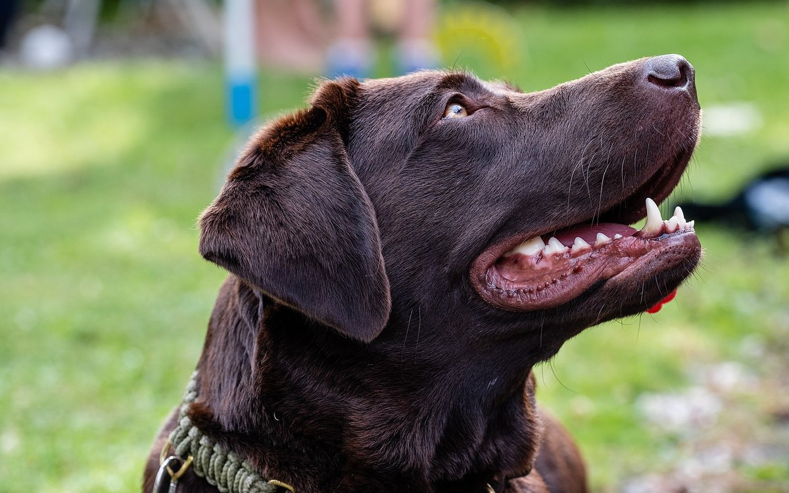

Собака из приюта: первые 30 дней, правило 3-3-3 и как помочь травмированной психике

2 июня 2026 · 10 минут чтения · Адаптация собак
Вы забрали собаку из приюта. Она сидит в углу, не смотрит на вас, отказывается от еды или, наоборот, носится по квартире и не останавливается. Это не «плохая» собака. Это животное, которое только что потеряло единственный знакомый мир — пусть и ужасный приют — и оказалось в незнакомом пространстве с незнакомыми людьми. Первые 30 дней определяют всё. Большинство ошибок хозяева делают именно в первую неделю — из добрых побуждений.
Правило 3-3-3: три фазы адаптации
Правило 3-3-3 — не официальный ветеринарный протокол, но точная практическая модель, которую используют зоопсихологи и опытные волонтёры по всему миру. Оно описывает три характерных временных периода после взятия собаки из приюта.
Первые 3 дня — «заморозка». Собака подавлена или перевозбуждена. Нервная система на максимальном уровне стресса: новые звуки, запахи, люди, планировка пространства. Собака может:
- Прятаться под кровать или в угол и не выходить.
- Отказываться от еды полностью (до 48-72 часов — это норма для стресса).
- Не реагировать на кличку, команды, ласку — «выключенный» взгляд.
- Трястись, тяжело дышать, вырываться с поводка.
- Или, наоборот, гиперактивно исследовать всё, лаять, не останавливаться.
Всё это — нормальный ответ нервной системы на острый стресс. Ваша задача в эти дни: минимум воздействий, максимум предсказуемости.
3 недели — «начинает понимать». Собака начинает понимать распорядок: когда кормят, когда гуляют, кто в доме. Появляются первые признаки расслабления — может лечь на бок вместо скрюченной позы, начинает есть с аппетитом, реагирует на голос. Могут появиться новые проблемы: деструктивное поведение (грызёт вещи), первые попытки проверить границы, дополнительное мочеиспускание в доме.
3 месяца — «дома». Собака понимает, что это её дом и её люди. Формируется привязанность. Начинает проявляться настоящий характер — тот, который был скрыт под стрессом первых недель. Многие хозяева говорят: «Первые месяц-два мы видели одну собаку, потом она как будто раскрылась и оказалась совсем другой».
Что такое декомпрессия и почему она критически важна
Декомпрессия — период намеренного снижения сенсорной нагрузки после длительного стресса. Приют — постоянный шум, нестабильность, ограниченное пространство, часто насилие или пренебрежение. Нервная система хронически перегружена.
Декомпрессия — это не скука и не жалость. Это физиологически необходимый период, во время которого нервная система приходит в базовое состояние. Без декомпрессии собака не может нормально учиться, формировать привязанность или адекватно реагировать на окружение.
Как выглядит правильная декомпрессия:
- Тихое, предсказуемое пространство. Минимум громкой музыки, телевизора, шумных гостей в первую неделю.
- Прогулки на длинном поводке (лонже 5-10 метров) без требований — собака просто идёт, нюхает, выбирает темп. Это называется «sniff walk» и является одним из самых эффективных инструментов снижения кортизола.
- Никаких команд в первые дни — не «сидеть», не «рядом», не «место». Дайте мозгу просто привыкнуть к пространству.
- Место для отдыха: лежанка или клетка (открытая дверью внутрь) в тихом углу — собственная территория, куда никто не заходит.
Что НЕ делать в первую неделю: список ошибок
Это самая важная часть статьи. Большинство проблем с приютскими собаками создаются именно в первые 7 дней — добрыми, но неправильными действиями.
- Не устраивать «показ» собаки гостям. Родственники, друзья, соседи — все хотят познакомиться с новым питомцем. Откажите всем на первую неделю. Каждый новый человек — дополнительный стресс для уже перегруженной нервной системы. Плановый визит гостей — не ранее второй-третьей недели, когда собака начала ориентироваться в доме.
- Не вести в собачий парк или на площадку. «Познакомим с другими собаками» — на второй-третий день — одна из самых частых ошибок. Социализация нужна, но позже. Сначала — базовая безопасность дома.
- Не делать груминг в первую неделю. Стрижка, купание, стрижка когтей — для собаки это физическое насилие от незнакомца (вами она вас ещё не считает «своим»). Если собака пришла грязной — подождите 1-2 недели. Исключение: явные медицинские показания (колтуны до кожи, инфекция).
- Не тащить за поводок, если собака встала и не идёт. «Замороженная» собака на прогулке — норма. Постойте рядом, подождите. Присядьте на корточки боком (фронтальная поза воспринимается как угрозу). Не тяните — это рвёт первичное доверие.
- Не вводить сложные команды и дрессировку. Мозг в состоянии стресса не обучается. Всё, что выучено в первые дни под давлением, закрепляется со страхом, а не с доверием.
- Не давить телесной лаской. Многие приютские собаки не привыкли к объятиям и поглаживаниям. Навязанный физический контакт = угроза. Первый шаг — пусть собака подойдёт сама.
Травмированная психика: как она проявляется
Приютские собаки часто несут следы травматического опыта — жестокого обращения, длительного одиночного содержания, потери хозяина или насилия. Это проявляется характерными паттернами поведения:
- Иммобилизация страхом — собака полностью «выключается» при определённых триггерах (громкий голос, поднятая рука, мужчина в шапке, определённый запах). Ступор — не безразличие, это максимальная реакция страха.
- Диссоциативные эпизоды — собака смотрит «сквозь» хозяина, не реагирует на имя, как будто «отключилась». Бывает у собак с историей жестокого обращения.
- Реактивность на поводке — агрессивные реакции на других собак, людей, велосипеды. Часто следствие фрустрации от ограничения движения в совокупности с хроническим стрессом.
- Сепарационная тревога — после первых привязанностей многие приютские собаки не могут оставаться одни. Разрушают квартиру, воют, травмируют себя.
- Пищевая агрессия — если еда в приюте была дефицитом, собака может агрессивно реагировать на приближение к миске.
Все эти состояния поддаются коррекции — через работу с поведенческим специалистом и, при необходимости, медикаментозную поддержку.
Постепенное знакомство с миром: как делать правильно
После первых двух недель декомпрессии начинается постепенное расширение мира собаки. Принцип: один новый опыт за раз, в темпе собаки, с позитивным подкреплением.
- Маршруты прогулок: начинайте с одного-двух маршрутов. Знакомая дорога снижает тревогу. После 2-3 недель добавляйте новые пути.
- Другие собаки: первое знакомство — нейтральная собака, которую вы знаете, на длинном поводке, в тихом месте. Не вольер, не площадка с несколькими собаками сразу.
- Новые люди: знакомьте по одному человеку, пусть человек не подходит сам, а ждёт, когда собака подойдёт. Угощение в руке — эффективный инструмент формирования положительной ассоциации.
- Метро, транспорт, торговые центры — только после полной базовой адаптации, не раньше 1-2 месяца.
Когда нужен зоопсихолог
Не все проблемы решаются терпением и временем. Есть признаки, при которых нужен профессионал:
- Агрессия с попытками укусить хозяина или членов семьи — после первых 2 недель адаптации.
- Полный отказ от еды более 3-4 дней.
- Самотравмирование: жуёт лапы до крови, бьётся головой о стену, крутится вокруг своей оси часами.
- Панические атаки — трясётся, не может успокоиться более часа без явного триггера.
- Сепарационная тревога уровня «разносит квартиру за 10 минут».
- Реактивность на поводке, с которой вы физически не можете справиться.
В России ветеринарные поведенческие специалисты (зоопсихологи с сертификацией) работают как очно, так и онлайн. Крупные города — «Центр доктора Покровской» (Москва), «Зоопсихолог Балт» (СПб), «Умный питомец» (онлайн по всей РФ). При выраженной тревоге — совместно с врачом рассматривается медикаментозная поддержка: флуоксетин (Reconcile), имипрамин, клоназепам — по назначению ветеринарного невролога или поведенческого специалиста.
Что НЕ делать с приютской собакой в первые 30 дней
Не ждать, что собака «раскроется» за 3 дня и будет счастлива. Адаптация длится месяцами. Не интерпретировать заторможенность как «тупость» или отсутствие контакта — это защитная реакция на стресс. Не менять еду в первую неделю — продолжайте кормить тем, чем кормил приют, или переходите максимально плавно. Не ругать за лужи в доме в первые дни — это физиологический ответ на стресс. Не сравнивать «до/после» с прошлой собакой или с чужими питомцами из интернета — у каждой приютской собаки своя история и своя шкала нормы.
Собака из приюта — это не «проект по реабилитации». Это живое существо, которое пережило что-то тяжёлое и теперь даёт вам шанс. Первые 30 дней — инвестиция, которая окупается годами настоящей привязанности. Медленно, тихо, без спешки.
← Все статьи · Открыть AnimaLife в Telegram · RSS